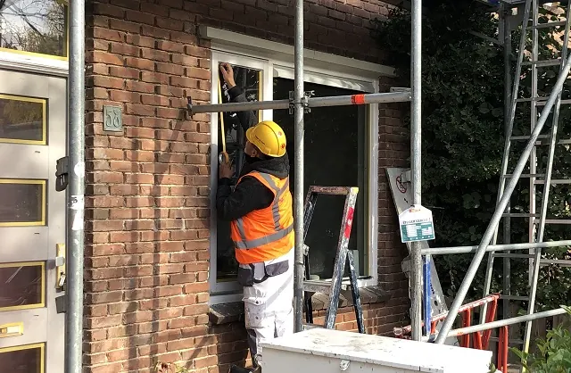
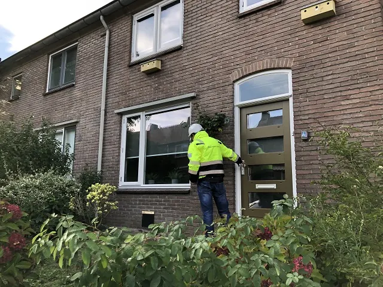

Nieuws ·
Renovatie en isolatie 182 woningen Wolfskuil gaat huurders geld opleveren

Dit bericht uit ons archief verscheen op 13 oktober 2022 op NieuwsNijmegen.nl. Data, tijden en prijzen kunnen inmiddels anders zijn.
Portaal helpt bewoners tijdens energie- en schuldencrisis
De gevolgen van de energie- en schuldencrisis worden steeds voelbaarder voor veel huurders van Portaal. Mensen hebben niet alleen te maken met stijgende energieprijzen, maar ook met veel duurdere dagelijkse boodschappen. Een grote groep huurders gaat gebukt onder de hoge lasten en heeft slapeloze nachten over de hoge energierekening. De aangekondigde maatregelen van het kabinet voor 2023, komen voor veel huurders te laat. Portaal gaat daarom actief helpen waar het kan; met onder andere een ‘sociaal verantwoorde incasso aanpak’, praktische maatregelen en versnelling van de renovatie en verduurzaming van haar woningen.

“We verwachten dat veel van onze bewoners in de schulden komen. We doen er alles aan om zo goed mogelijk met huurschulden om te gaan, volgens het keurmerk sociaal verantwoord incasseren. Maar zelfs met deze maatregelen kunnen we de stijgende energieprijzen niet opvangen. Wat wij kunnen doen, is maar een onderdeel van wat er nodig is. De sleutel voor een oplossing ligt bij het Rijk, ook al weten we dat die oplossing niet eenvoudig is,” legt Martine Verheijen, manager van Portaal in Nijmegen, uit.
Week van de duurzaamheid: wij gaan bewoners helpen
“Aan de stijgende prijzen kan Portaal niks veranderen. Op korte termijn helpen we bewoners door onder andere het aanbrengen van radiatorfolie, brievenbusborstels en/of tocht-strips. Deze acties voeren onze vaklieden uit als zij voor andere reparatiemeldingen naar de woningen toe gaan. Deze week organiseren we ook een voorlichtingsactie: wat kunnen bewoners zelf doen om op de energierekening te besparen?”
Tegelijkertijd doet Portaal er alles aan om het renoveren en verduurzamen van haar 52.000 woningen te versnellen, ook in Nijmegen: “We verdubbelen Portaal-breed onze duurzame nieuwbouw op jaarbasis van 500 naar 1.000 en versnellen onze renovatie van 1.300 naar 1.800 woningen per jaar. Verder hebben we dit jaar de huren bevroren van alle huurwoningen met een E, F en G label. In 2023 verlagen we de huren tot 550 euro voor de mensen met een inkomen tot 120% van het minimumloon. Onder voorwaarde dat het voordeel bij de huurder terecht komt en niet in mindering wordt gebracht van de huurtoeslagen.”
Flink aan- en ingepakte woning levert huurders een lagere energie nota op
Ook de Nijmeegse wijk Wolfskuil zijn Portaal en haar ketenpartner Veluwezoom Verkerk begonnen met de renovatie van 182 woningen. Ruim 77% van de bewoners uit de Bosbesstraat, Floraweg, Klaverstraat, Varenstraat, Korenbloemstraat, Mirtestraat, Papaverstraat en Zonnebloemstraat stemde in het voorjaar in met het renovatievoorstel. Een meevaller voor de bewoners is dat ze voor deze verbetering en isolatie geen huurverhoging krijgen doorberekend. Portaal krijgt namelijk voor de verduurzaming van de woningen een subsidie vanuit de Gelderse Investeringsimpuls.
De woningen worden comfortabeler en energiezuiniger gemaakt, door een betere isolatie (o.a. aan dak en gevel) hebben de woningen na de werkzaamheden minimaal energielabel B. De ventilatie in de woning wordt verbeterd, zodat het binnenklimaat gezonder en prettiger is. Aan de buitenkant van de woning worden onderhoud en verbeteringen uitgevoerd, zodat uw woning er weer stralend bij staat. Uiteindelijk hebben de bewoners weer een gezonde, veilige, comfortabele en energiezuinige woning met een mooie uitstraling, waar het prettig wonen is. De verwachting is dat de werkzaamheden voor de zomer van 2023 afgerond zijn.
Karakteristieke, knusse woningen, maar wel toe aan een opknapbeurt
Samen met de Biezen en het Waterkwartier maakt Wolfskuil onderdeel uit van het stadsdeel Oud-West. Hier staan veel woningen die gebouwd zijn voor of kort na de Tweede Wereldoorlog. Bijzondere woningen, maar er moet wel wat gebeuren. De woningen in Wolfskuil zijn gebouwd rond 1948. In een tijd van de wederopbouw van Nederland en hoge woningnood. Bijzonder is het dat de woningen veel karakteristieke details hebben en in sfeervolle straten liggen, die de wijk een eigen identiteit geven. Maar, zoals veel woningen uit die tijd, zijn de woningen nauwelijks of niet geïsoleerd. Met dit plan maken we de woningen weer toekomstbestendig.
Wat is de Gelderse Investeringsimpuls?
De provincie Gelderland wil verduurzaming in haar regio stimuleren om het energieverbruik binnen de gebouwde omgeving te verminderen. Woningcorporaties spelen daar volgens de provincie een belangrijke rol in. Om deze reden worden verduurzamingstrajecten van woningcorporaties gesubsidieerd, wanneer zij kunnen versnellen of de ambitie kunnen verhogen.